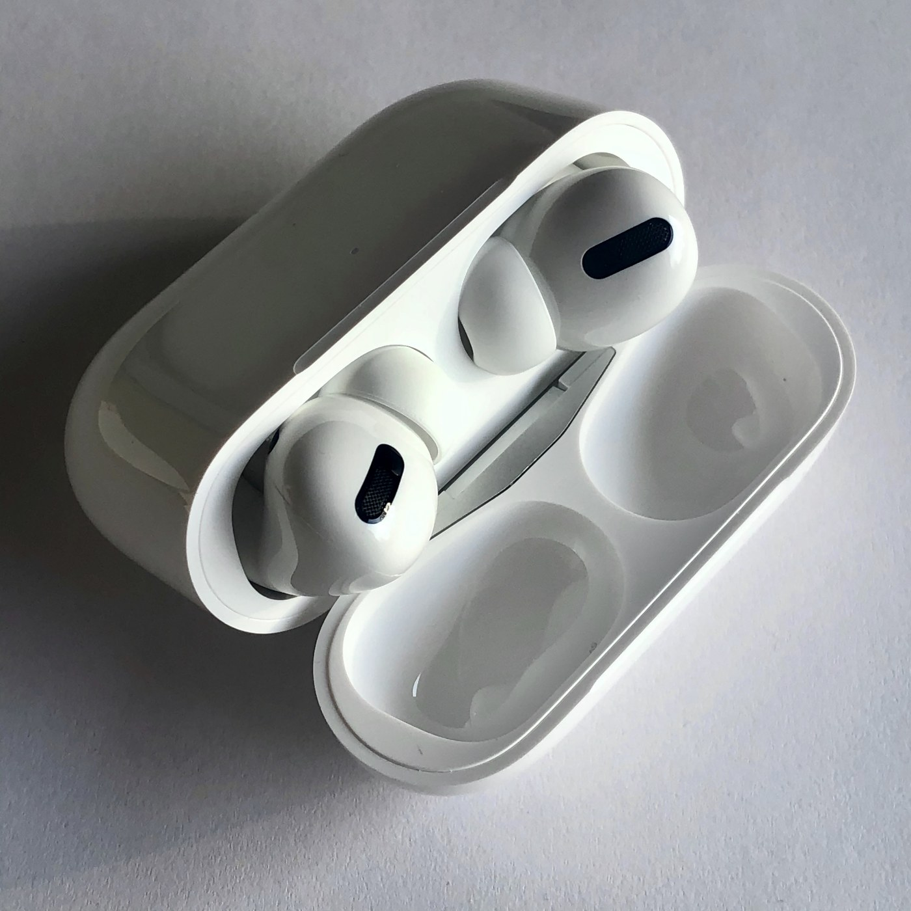

The Autopsy Report · Device #053
AirPods Pro (1st generation)
Apple's first noise-cancelling earbuds squeezed an entire system-in-package around the H1 chip into something smaller than a thumbnail — then sealed it shut forever.
What is this thing?
The AirPods Pro (1st generation) are Apple's in-ear wireless earbuds with active noise cancellation — silicone tips, a shorter stem than the standard AirPods, and a wireless-charging case in the box. The model number is A2084, and at their heart is a custom system-in-package built around the H1 chip. MacRumors · iFixit teardown (mirror)
Not yet on our bench
Straightforward honesty first: BareBoard has not possessed, disassembled, tested, booted, or touched the firmware of this unit. We don't have one on the bench yet. Everything below is built from public records — FCC filings, manufacturer material, datasheets, manuals, and published teardowns — with every claim linked to its source and graded for confidence. When a fact genuinely requires our hands on hardware (boot logs, our own photos, exact board revision of a future unit), we say so out loud.
That framing is what makes publishing now legitimate: this is a public-records autopsy, and it will grow into a bench autopsy the day a unit lands on our desk.
A short history
- October 11, 2019Apple files for FCC authorization of the AirPods Pro Bluetooth earbud (FCC ID BCG-A2084). FCC filing
- October 28, 2019The FCC grants the filing. FCC filing
- October 31, 2019iFixit's teardown lands: a custom SiP containing the H1, Bosch and STMicroelectronics sensor guesses, and a repairability score of zero — like the standard AirPods, they're glued shut. MacRumors · SlashGear
The outside
Shorter stems than the standard AirPods, silicone ear tips in three sizes, and a wider charging case that supports wireless charging out of the box. The case keeps the Lightning port, the rear setup button, and the front status LED. Cult of Mac

The board
Each bud centers on a custom system-in-package containing the H1 — Apple's way of stacking the Bluetooth, audio, and sensor logic into one module. iFixit's teardown also spotted what it believes to be a Bosch inertial sensor and an STMicroelectronics accelerometer, plus support chips identified across the bud and case: a Dialog D2508B, a Cirrus Logic CS44L22, and an ADI AD7149. The bud carries a 43 mAh (0.16 Wh) cell; the charging case holds a 519 mAh (1.98 Wh) battery. iFixit teardown (mirror) · Electronics360
As with the standard AirPods, the assembly is glued and potted — opening a bud destroys it. MacRumors
Under the microscope: the chips
What's inside, what each part does, and how sure we are. Confirmed means a primary source. Likely means well-corroborated public records. We keep the earbud and charging-case parts in one table and say which is which where the teardowns do — we won't invent placements they don't state.
| Chip | What it does | How we know | Dig deeper |
|---|---|---|---|
| Apple H1 custom SiP in each bud |
Bluetooth audio, active noise cancellation processing, “Hey Siri”. iFixit teardown (mirror) | Likely iFixit's teardown identifies the custom SiP as containing the H1. iFixit teardown (mirror) | No public datasheet was found — Apple does not publish datasheets for the H1. |
| Bosch inertial sensor (teardown's belief) | Motion sensing. | Likely The teardown team describes it as most likely a Bosch IMU — their wording, kept as-is. iFixit teardown (mirror) | Exact part number not identified in public records. |
| STMicroelectronics accelerometer (teardown's belief) | Motion sensing. | Likely Same basis — the teardown's identification, not ours. iFixit teardown (mirror) | Exact part number not identified in public records. |
| Dialog D2508B · Cirrus Logic CS44L22 · ADI AD7149 | Support chips identified across the bud and charging case (power/audio/capacitive sensing roles per the teardown analysis). Electronics360 | Likely Named in the Electronics360 teardown analysis. Electronics360 | Public datasheets not located for these exact markings. |
| Batteries 43 mAh / 0.16 Wh (bud) · 519 mAh / 1.98 Wh (case) |
Power for the bud and the case respectively. | Likely Reported by the teardown analysis. Electronics360 | — |
The government's file on this device
Apple's FCC filing — FCC ID BCG-A2084, Bluetooth earbud — was applied for on October 11, 2019 and granted on October 28, 2019. The filing lists conducted output powers of 19 mW and 10 mW across its Bluetooth authorizations, and includes a five-page internal-photo exhibit. FCC filing
Browse the file yourself: filing page
Debug & service modes
Our posture: we listen, we don't knock. Only publicly verified, user-facing service behavior.
Factory reset (public, user-facing). Same as the standard AirPods: buds in the case, lid closed 30 seconds, open the lid, hold the rear setup button about 15 seconds until the LED flashes amber, then white. Apple Support, via secondary
No public debug interface. No serial console, JTAG header, or diagnostic mode appears in any public record we found. Firmware updates are automatic via a paired iPhone.
What the public record says
Zero for repair, again. iFixit gave the AirPods Pro 0 out of 10 for repairability — glued construction, destructive opening, no path to a battery swap. MacRumors · SlashGear
A SiP, not a single chip. The notable engineering detail is the packaging: Apple's H1 arrives inside a custom system-in-package rather than as a lone chip, which is how so much fits in a bud this small. iFixit teardown (mirror)
What we didn't do
- We have not possessed, disassembled, tested, or booted this device.
- We have not extracted, modified, shared, or reverse-engineered its firmware.
- We document only publicly verified interfaces and user-facing modes — read-only, no lock bypass, no authentication defeat, no credential or key material.
- Anything below marked as unknown stays unknown until the bench says otherwise.
By the numbers
- Model: A2084 (FCC ID BCG-A2084)
- Chip: Apple H1 inside a custom SiP (teardown-identified — Likely)
- Batteries: 43 mAh / 0.16 Wh per bud; 519 mAh / 1.98 Wh case
- Radio: Bluetooth; FCC-listed conducted outputs 19 mW and 10 mW
- FCC: applied Oct 11, 2019 · granted Oct 28, 2019
- Repairability: 0/10 (iFixit)
Words to know
Every term this page uses, in plain English. No prior knowledge required.
- System-in-package (SiP)
- Several chips and components stacked into one module — denser than a single chip, and even harder to repair.
- Active noise cancellation
- Microphones listen to outside noise and the buds play an opposite sound wave to cancel it.
- Inertial sensor / IMU
- A chip that feels motion and rotation — how the buds know they've been tapped or moved.
- mAh / Wh
- Units of battery capacity. 43 mAh is small; 519 mAh in the case recharges the buds several times over.
- FCC ID
- The ID the FCC assigns to each approved wireless product. Punch it into fccid.io and the whole public filing comes up.
Sources & confidence
- FCC filing BCG-A2084 (Apple Inc., Bluetooth earbud, application Oct 11 2019, grant Oct 28 2019, output powers, internal-photo exhibit): primary source — Confirmed.
- Custom H1 SiP, Bosch/ST sensor guesses, glued construction, 0/10 repairability: iFixit teardown via MacRumors/SlashGear and the mirrored teardown PDF — Likely.
- Dialog D2508B, Cirrus Logic CS44L22, ADI AD7149, battery capacities: Electronics360 teardown analysis — Likely.
- Factory reset procedure: Apple Support documentation via secondary — user-facing, read-only.
- Anything not listed here is unknown until the bench says otherwise. We'll say so, out loud, when that's the case.
Serial numbers and QR codes are blacked out of every published photo. Raw originals stay private.
Legal note. BareBoard is an educational project. Everything on this page comes from public records — FCC filings, manufacturer material, datasheets, and published teardowns — plus our own analysis of those records. We don't publish, host, or distribute firmware, keys, passwords, or credentials. Product names and trademarks belong to their respective owners and appear here only to identify the hardware. If you believe anything here infringes your rights, contact us and we'll address it promptly.